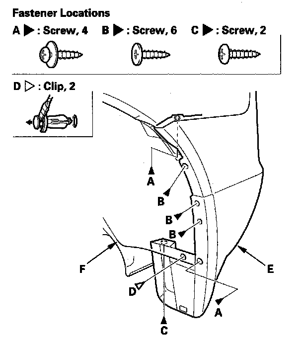
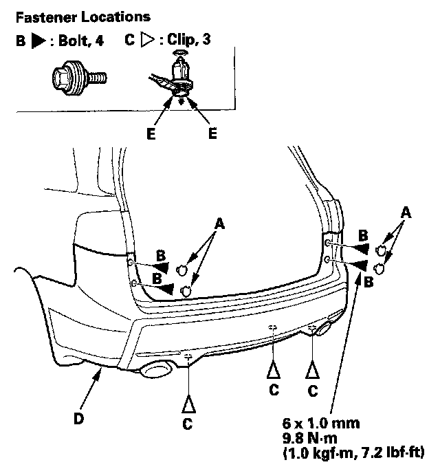
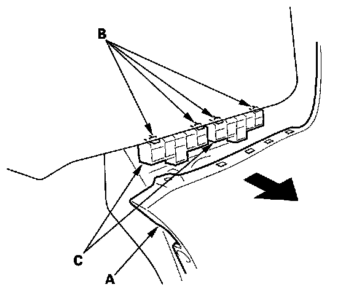
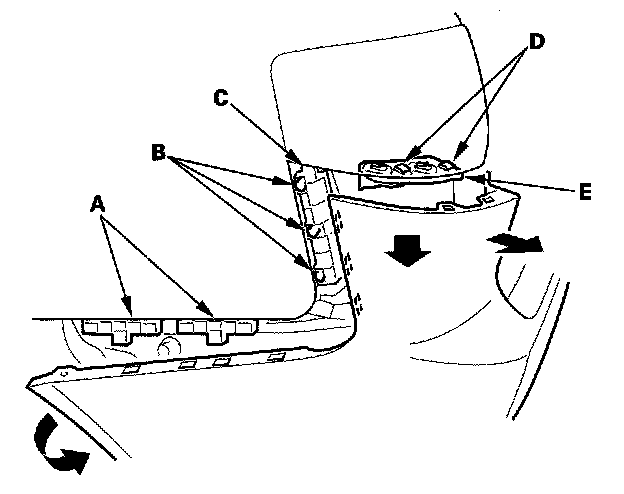
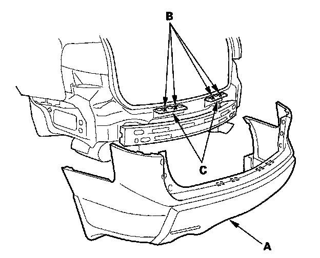

Rear Bumper
Rear Bumper Removal/InstallationNOTE:
- Put on gloves to protect your hands.
- Have an assistant help you when removing and installing the rear bumper.
- Take care not to scratch the rear bumper and body.

1. From the rear wheel arches on both sides, remove the screws (A, B, C) and clips (D) securing the rear bumper (E), and rear fender cover (F).

2. Remove the caps (A). Remove the bolts (B) and clips (C) securing the rear bumper (D).
NOTE: To remove the clips, pry the inner clip up at the edge near the line (E) on its head.

3. Pull on the rear bumper (A) at the wheel arch areas to release it from the hooks (B) on the side spacers (C).

4. With the help of an assistant, while pulling the wheel arch portion away from the side spacers (A), pull the rear bumper to release the bumper from the hooks (B) on the side upper spacer (C), and from the hooks (D) on the side bracket (E).

5. With the help of an assistant, pull out on the rear bumper to release the bumper (A) from the hooks (B) on both upper brackets (C).
6. Install the bumper in the reverse order of removal, and note these items:
- Make sure the rear bumper engages the hooks (of both the side bracket, side spacers, and side upper spacers) on each side securely.
- If the clips are damaged or stress-whitened, replace them with new ones.
- Push the clips and hooks into place securely.